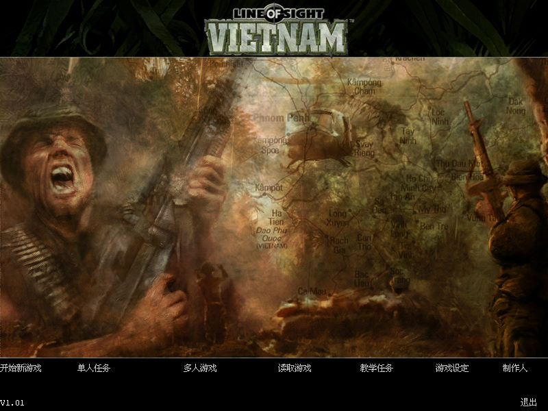
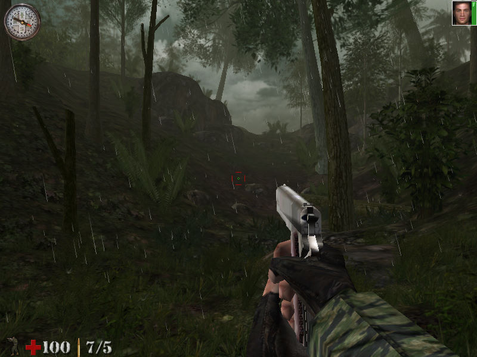

名稱：重返狼穴3：越南視線 (Line of Sight: Vietnam，簡中／英文版)
簡介：nFusion 2003年出品的第一人稱射擊遊戲，由Infogrames代理發行。同年由交大銘泰
簡中化並代理發行 [待補]。


備註：英文版為1.03版，簡中版為1.01版
保護：英文版原為光碟SecuROM 4.84，2004年版已去除SecuROM保護。
備註：VirtualBox無法執行，虛擬機請使用VMware。
備註：遊戲顯示若是第三人稱視角，可到[遊戲設定]裡更改[默認視角模式]為第一人稱。
檔案：losv-chs101.rar = 1.01版簡化檔（英文1.03版覆蓋後變回1.01版）